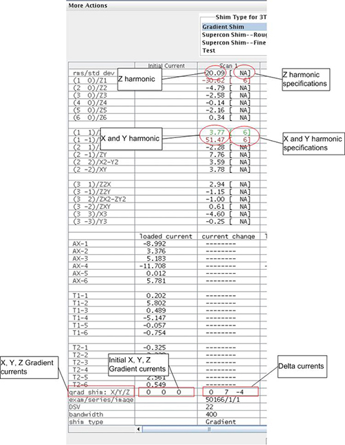
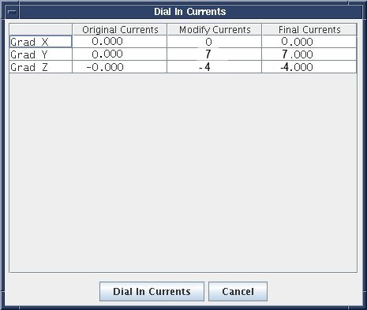

After the scan is complete, the tool calculates all the harmonics, but only X, Y and Z harmonics are compared to specifications. For other harmonics and rms/std dev, the specification is NA. (See Illustration 15.)
Green cell = Passed spec
Red cell = Failed spec
Illustration 15: Gradient Harmonics and Gradient Bits

The tool calculates the X, Y and Z gradient delta currents (for gradient bits only) and the new currents based on the harmonics in another window. (The currents shown in Illustration 16 are examples only.)
Illustration 16: Original Delta and New Currents (Examples)
